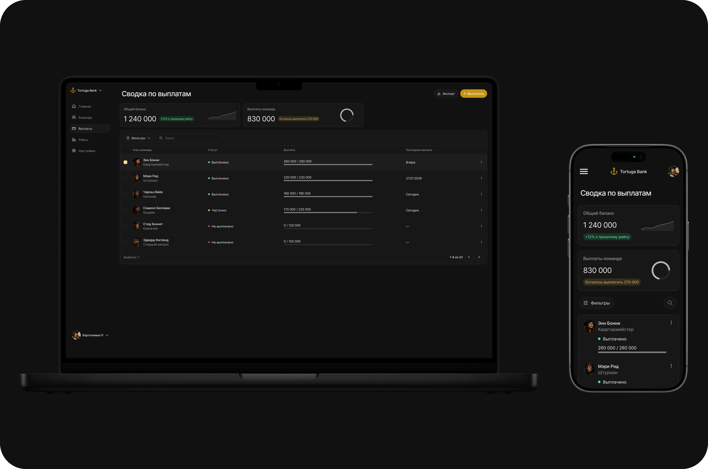
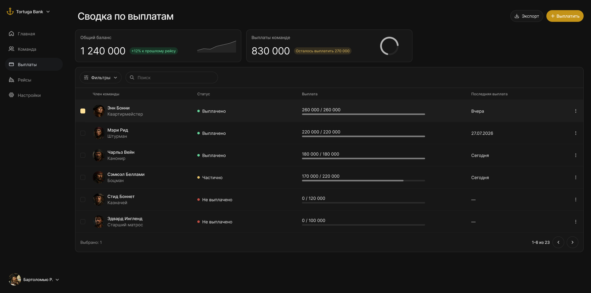
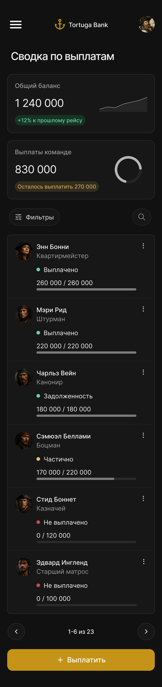

Сначала выделил ключевой сценарий использования. Руководитель заходит в кабинет не ради долгого изучения графиков, а чтобы быстро оценить финансовое состояние бизнеса и отправить зарплату сотрудникам.
Отказался от перегруженных дашбордов и оставил две информативные карточки:


Именно в таблице происходит основная работа. В неё вынесены:
Для быстрой работы с командой реализованы:
Этот сценарий позволяет в пару кликов отметить нужных специалистов и провести массовую выплату.
При адаптации под смартфоны сценарии сохранились в полном объёме: таблица трансформируется в аккуратные карточки сотрудников, а фильтры вынесены в удобную нижнюю шторку (bottom sheet).
Выбрал глубокую тёмную тему, чтобы снизить нагрузку на глаза при долгой работе, а золотой акцентный цвет добавил продукту характер. При этом интерфейс остаётся строгим рабочим инструментом без визуального шума.
Для операционного B2B-интерфейса скорость решения задачи важнее декоративных графиков. Фокус на понятных финансовых показателях и удобной таблице помогает пользователю сразу перейти к действиям без лишних кликов.